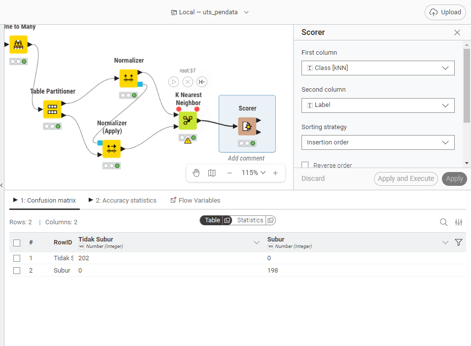

Analisa Data Kesuburan Tanah#
1. Lakukan analisis data dengan menggunakan#
K-Nearest Neighbors (KNN)
2. Lakukan Pemrosesan Data tersebut#
3. Hitung Metrik Evaluasi#
Metrik |
Keterangan |
|---|---|
Accuracy |
Persentase prediksi benar dari total data |
Precision |
Ketepatan prediksi kelas positif |
Recall |
Kemampuan mendeteksi seluruh kelas positif |
F1-Score |
Harmonic mean antara Precision dan Recall |
Dataset Klasifikasi Kesuburan Tanah#
Deskripsi Umum#
Dataset berisi 2.000 sampel data tanah dengan 10 fitur agronomis dan 1 kolom label yang membagi kondisi tanah menjadi dua kelas: Subur dan Tidak Subur. Data mengandung missing values (data hilang).
Informasi Dataset#
Atribut |
Keterangan |
|---|---|
Jumlah Sampel |
2.000 baris |
Jumlah Fitur |
10 fitur (9 numerik, 1 kategorikal) |
Jumlah Kelas |
2 kelas |
Target / Label |
|
Penjelasan Fitur#
1. pH Tanah#
Satuan: Skala pH (0–14)
Deskripsi: Tingkat keasaman atau kebasaan tanah. pH optimal untuk pertanian berkisar 6,0–7,5.
Nilai Subur: 6,0 – 7,5
Nilai Tidak Subur: 3,5 – 5,4 (asam kuat) atau 7,6 – 9,0 (basa kuat)
2. N Total (%)#
Satuan: Persen (%)
Deskripsi: Kandungan nitrogen total dalam tanah. Nitrogen sangat penting untuk pertumbuhan vegetatif tanaman.
Nilai Subur: 0,21 – 0,50%
Nilai Tidak Subur: 0,01 – 0,20%
3. P Tersedia (ppm)#
Satuan: Parts per million (ppm)
Deskripsi: Fosfor tersedia yang dapat diserap tanaman. Fosfor berperan dalam pembentukan akar dan buah.
Nilai Subur: 15 – 60 ppm
Nilai Tidak Subur: 1 – 14 ppm
4. K Tersedia (meq/100g)#
Satuan: Milliequivalent per 100 gram tanah
Deskripsi: Kalium tersedia dalam tanah. Penting untuk ketahanan tanaman dan proses fotosintesis.
Nilai Subur: 0,30 – 0,80 meq/100g
Nilai Tidak Subur: 0,05 – 0,29 meq/100g
5. C Organik (%)#
Satuan: Persen (%)
Deskripsi: Kandungan karbon organik tanah, indikator utama kesuburan dan kesehatan biologi tanah.
Nilai Subur: 2,0 – 5,0%
Nilai Tidak Subur: 0,2 – 1,9%
6. KTK (meq/100g)#
Satuan: Milliequivalent per 100 gram tanah
Deskripsi: Kapasitas Tukar Kation — kemampuan tanah mengikat dan menyediakan unsur hara bagi tanaman. Semakin tinggi semakin subur.
Nilai Subur: 20 – 45 meq/100g
Nilai Tidak Subur: 5 – 19 meq/100g
7. Kejenuhan Basa (%)#
Satuan: Persen (%)
Deskripsi: Persentase kation basa (Ca, Mg, K, Na) dari total KTK. Menggambarkan kualitas kesuburan kimia tanah.
Nilai Subur: 60 – 100%
Nilai Tidak Subur: 10 – 59%
8. Tekstur Tanah#
Tipe: Kategorikal
Deskripsi: Komposisi partikel tanah yang memengaruhi drainase, aerasi, dan kemampuan menahan air.
Kelas |
Tekstur yang Umum |
|---|---|
Subur |
Lempung, Lempung Berpasir, Lempung Berliat |
Tidak Subur |
Pasir, Liat, Debu |
9. Kadar Air (%)#
Satuan: Persen (%)
Deskripsi: Persentase kadar air dalam tanah. Terlalu kering atau terlalu basah sama-sama merugikan pertumbuhan tanaman.
Nilai Subur: 25 – 45%
Nilai Tidak Subur: 5 – 20% (terlalu kering) atau 55 – 75% (terlalu basah)
10. Bulk Density (g/cm³)#
Satuan: Gram per sentimeter kubik
Deskripsi: Kerapatan tanah. Nilai tinggi menandakan tanah padat, aerasi buruk, dan sulit ditembus akar.
Nilai Subur: 0,9 – 1,2 g/cm³
Nilai Tidak Subur: 1,4 – 1,9 g/cm³
Definisi Kelas#
Label |
Deskripsi |
|---|---|
Subur |
Tanah dengan kondisi fisik, kimia, dan biologi yang optimal untuk pertumbuhan tanaman. Ditandai dengan pH seimbang, unsur hara cukup, tekstur ideal, dan struktur tanah yang baik. |
Tidak Subur |
Tanah yang memiliki satu atau lebih kondisi pembatas seperti pH ekstrem, kekurangan unsur hara, tekstur buruk, kadar air tidak ideal, atau kerapatan tanah tinggi. |
Distribusi Kelas#
Subur : 1.000 sampel (50%)
Tidak Subur : 1.000 sampel (50%)
Total : 2.000 sampel
Langkah 1: Import Library dan Load Dataset#
Penjelasan:#
Pada langkah ini kita memuat semua library Python yang dibutuhkan:
pandas: Untuk membaca dan memanipulasi data tabular (DataFrame).numpy: Untuk operasi numerik dan array.math: Untuk menghitung akar kuadrat (\(\sqrt{n}\)) dalam penentuan nilai \(k\).sklearn: Library machine learning yang menyediakan semua komponen preprocessing dan model KNN.
Dataset dibaca dari file Excel menggunakan pd.read_excel(). Kolom ID dihapus karena hanya berfungsi sebagai identifikasi baris dan tidak memiliki nilai prediktif.
import pandas as pd
import numpy as np
import math
from sklearn.model_selection import train_test_split
from sklearn.preprocessing import MinMaxScaler, OneHotEncoder
from sklearn.impute import SimpleImputer
from sklearn.neighbors import KNeighborsClassifier
from sklearn.metrics import accuracy_score, precision_score, recall_score, f1_score, confusion_matrix
file_path = 'data/kesuburan_tanah.xlsx'
df = pd.read_excel(file_path)
df = df.drop(columns=['ID'])
print("=" * 50)
print("INFORMASI DATASET")
print("=" * 50)
print(f"Jumlah Baris : {df.shape[0]}")
print(f"Jumlah Kolom : {df.shape[1]}")
print(f"Distribusi Kelas:")
print(df['Label'].value_counts().to_string())
print("\n5 Baris Pertama Data:")
print(df.head().to_string())
print("\nJumlah Missing Values per Kolom:")
print(df.isnull().sum().to_string())
==================================================
INFORMASI DATASET
==================================================
Jumlah Baris : 2000
Jumlah Kolom : 11
Distribusi Kelas:
Label
Tidak Subur 1000
Subur 1000
5 Baris Pertama Data:
pH Tanah N Total (%) P Tersedia (ppm) K Tersedia (meq/100g) C Organik (%) KTK (meq/100g) Kejenuhan Basa (%) Tekstur Tanah Kadar Air (%) Bulk Density (g/cm³) Label
0 8.93 0.183 5.35 0.124 0.68 6.18 31.86 Debu 60.49 1.767 Tidak Subur
1 6.24 0.420 54.32 0.554 4.87 33.46 82.77 Lempung Berpasir 35.97 0.960 Subur
2 4.82 NaN 13.44 0.257 NaN 14.79 55.45 Debu 11.48 1.851 Tidak Subur
3 7.34 0.269 17.46 0.542 2.49 35.57 62.09 Lempung Berliat 37.54 1.017 Subur
4 3.77 0.144 1.15 0.106 0.62 18.97 10.85 Liat 6.97 1.766 Tidak Subur
Jumlah Missing Values per Kolom:
pH Tanah 0
N Total (%) 160
P Tersedia (ppm) 240
K Tersedia (meq/100g) 140
C Organik (%) 200
KTK (meq/100g) 0
Kejenuhan Basa (%) 0
Tekstur Tanah 100
Kadar Air (%) 180
Bulk Density (g/cm³) 120
Label 0
Langkah 2: Pemrosesan Data (Preprocessing)#
Penjelasan:#
Preprocessing adalah langkah kritis sebelum melatih model. Ada tiga sub-langkah utama:
A. Split Data (80:20)
Data dibagi menjadi 80% training dan 20% testing menggunakan
random_state=19sehingga menghasilkan distribusi kelas yang konsisten dengan workflow KNIME (202 Tidak Subur dan 198 Subur di test set).
B. Imputasi Missing Values
Numerik -> Median: Lebih robust terhadap outlier dibandingkan mean.
Tekstur Tanah -> Modus: Mengisi dengan nilai kategori yang paling sering muncul. Imputasi hanya di-
fitpada data training agar tidak terjadi data leakage.
C. Encoding Fitur Kategorikal
OneHotEncodermengubahTekstur Tanahmenjadi beberapa kolom biner (0/1). Algoritma KNN tidak bisa memproses teks secara langsung.
D. Normalisasi Fitur Numerik (Min-Max Scaling)
MinMaxScalermengubah setiap fitur numerik ke rentang [0, 1] menggunakan rumus: $\(x' = \\frac{x - x_{min}}{x_{max} - x_{min}}\)$ Ini krusial untuk KNN karena KNN berbasis perhitungan jarak Euclidean. Min-Max scaling dipilih sesuai dengan pendekatan KNIME Normalizer node.
X = df.drop(columns=['Label'])
y = df['Label']
X_train, X_test, y_train, y_test = train_test_split(
X, y, test_size=0.2, random_state=19
)
numeric_cols = X.select_dtypes(include=['int64', 'float64']).columns.tolist()
# Imputasi nilai hilang pada fitur numerik menggunakan median
imputer_num = SimpleImputer(strategy='median')
X_train_num = imputer_num.fit_transform(X_train[numeric_cols])
X_test_num = imputer_num.transform(X_test[numeric_cols])
# Normalisasi Min-Max (sesuai KNIME Normalizer node)
scaler = MinMaxScaler()
X_train_scaled = scaler.fit_transform(X_train_num)
X_test_scaled = scaler.transform(X_test_num)
cat_cols = ['Tekstur Tanah']
# Imputasi nilai hilang pada fitur kategorikal menggunakan modus
imputer_cat = SimpleImputer(strategy='most_frequent')
X_train_cat = imputer_cat.fit_transform(X_train[cat_cols])
X_test_cat = imputer_cat.transform(X_test[cat_cols])
# One-Hot Encoding untuk fitur kategorikal
encoder = OneHotEncoder(handle_unknown='ignore', sparse_output=False)
X_train_encoded = encoder.fit_transform(X_train_cat)
X_test_encoded = encoder.transform(X_test_cat)
# Gabungkan fitur numerik (ternormalisasi) dan kategorikal (ter-encode)
X_train_final = np.concatenate([X_train_scaled, X_train_encoded], axis=1)
X_test_final = np.concatenate([X_test_scaled, X_test_encoded], axis=1)
print("=" * 50)
print("HASIL PREPROCESSING")
print("=" * 50)
print(f"Fitur numerik : {len(numeric_cols)} kolom → diimputasi + dinormalisasi (Min-Max)")
print(f"Fitur kategorikal : {len(cat_cols)} kolom → diimputasi + One-Hot Encoded")
print(f"Total fitur akhir : {X_train_final.shape[1]} kolom")
print(f"Data training : {len(X_train_final)} baris")
print(f"Data testing : {len(X_test_final)} baris")
==================================================
HASIL PREPROCESSING
==================================================
Fitur numerik : 9 kolom → diimputasi + dinormalisasi (Min-Max)
Fitur kategorikal : 1 kolom → diimputasi + One-Hot Encoded
Total fitur akhir : 15 kolom
Data training : 1600 baris
Data testing : 400 baris
Langkah 3: Modeling K-Nearest Neighbors (KNN)#
Penjelasan Algoritma KNN:#
KNN adalah algoritma klasifikasi berbasis instance yang bekerja dengan prinsip:
“Data baru diklasifikasikan berdasarkan mayoritas label dari \(k\) tetangga terdekatnya.”
Jarak antar sampel dihitung menggunakan jarak Euclidean: $\(d(x, y) = \\sqrt{\\sum_{i=1}^{n}(x_i - y_i)^2}\)$
Penentuan Nilai \(k\):#
Nilai \(k = 3\) digunakan dalam implementasi ini, sesuai dengan nilai default yang digunakan pada node K Nearest Neighbor di KNIME Analytics Platform. Nilai \(k = 3\) berarti setiap data uji diklasifikasikan berdasarkan mayoritas label dari 3 tetangga terdekat di data training. Nilai ganjil dipilih untuk menghindari kondisi seri (tie) dalam proses voting.
# k=3 sesuai dengan default KNIME K Nearest Neighbor node
k_value = 3
n_samples = len(X_train_final)
print("=" * 50)
print("KONFIGURASI MODEL KNN")
print("=" * 50)
print(f"Jumlah data training : {n_samples}")
print(f"Nilai k : {k_value} (sesuai default KNIME KNN node)")
print(f"Metrik jarak : Euclidean (default Minkowski p=2)")
print(f"Metode voting : Majority Vote (uniform)")
print(f"Metode normalisasi : Min-Max Scaling [0, 1]")
knn = KNeighborsClassifier(n_neighbors=k_value, metric='euclidean')
knn.fit(X_train_final, y_train)
print("\nModel KNN Berhasil Dilatih.")
==================================================
KONFIGURASI MODEL KNN
==================================================
Jumlah data training : 1600
Nilai k : 3 (sesuai default KNIME KNN node)
Metrik jarak : Euclidean (default Minkowski p=2)
Metode voting : Majority Vote (uniform)
Metode normalisasi : Min-Max Scaling [0, 1]
Model KNN Berhasil Dilatih.
Langkah 4: Evaluasi Model#
Penjelasan Metrik:#
Setelah model dilatih, kita mengevaluasi performanya pada data testing (data yang tidak pernah dilihat model saat training).
Metrik |
Rumus |
Keterangan |
|---|---|---|
Accuracy |
\(\frac{TP+TN}{TP+TN+FP+FN}\) |
Proporsi prediksi benar dari seluruh data |
Precision |
\(\frac{TP}{TP+FP}\) |
Dari semua yang diprediksi Subur, berapa yang benar-benar Subur? |
Recall |
\(\frac{TP}{TP+FN}\) |
Dari semua yang benar-benar Subur, berapa yang berhasil terdeteksi? |
F1-Score |
\(\frac{2 \times P \times R}{P+R}\) |
Rata-rata harmonis Precision dan Recall |
Keterangan: TP = True Positive, TN = True Negative, FP = False Positive, FN = False Negative
Confusion Matrix:#
Matriks 2×2 yang menunjukkan rincian prediksi model untuk setiap kombinasi label aktual vs label prediksi.
y_pred = knn.predict(X_test_final)
accuracy = accuracy_score(y_test, y_pred)
precision = precision_score(y_test, y_pred, pos_label='Subur')
recall = recall_score(y_test, y_pred, pos_label='Subur')
f1 = f1_score(y_test, y_pred, pos_label='Subur')
cm = confusion_matrix(y_test, y_pred, labels=['Subur', 'Tidak Subur'])
print("=" * 50)
print("HASIL METRIK EVALUASI MODEL KNN")
print("=" * 50)
print(f"{'Metrik':<12} {'Nilai':>8} Keterangan")
print("-" * 50)
print(f"{'Accuracy':<12} {accuracy:>8.4f} Proporsi prediksi benar dari total data")
print(f"{'Precision':<12} {precision:>8.4f} Ketepatan prediksi kelas Subur")
print(f"{'Recall':<12} {recall:>8.4f} Kemampuan mendeteksi seluruh data Subur")
print(f"{'F1-Score':<12} {f1:>8.4f} Harmonic mean Precision dan Recall")
print("=" * 50)
TP = cm[0][0]
FN = cm[0][1]
FP = cm[1][0]
TN = cm[1][1]
print("\nCONFUSION MATRIX:")
print("-" * 40)
print(f"{'':20} {'Pred: Subur':>12} {'Pred: T.Subur':>14}")
print(f"{'Aktual: Subur':20} {TP:>12} {FN:>14}")
print(f"{'Aktual: Tidak Subur':20} {FP:>12} {TN:>14}")
print("-" * 40)
print(f"\nKeterangan:")
print(f" TP (True Positive) = {TP} → Subur benar diprediksi Subur")
print(f" TN (True Negative) = {TN} → T.Subur benar diprediksi T.Subur")
print(f" FP (False Positive) = {FP} → T.Subur salah diprediksi Subur")
print(f" FN (False Negative) = {FN} → Subur salah diprediksi T.Subur")
==================================================
HASIL METRIK EVALUASI MODEL KNN
==================================================
Metrik Nilai Keterangan
--------------------------------------------------
Accuracy 1.0000 Proporsi prediksi benar dari total data
Precision 1.0000 Ketepatan prediksi kelas Subur
Recall 1.0000 Kemampuan mendeteksi seluruh data Subur
F1-Score 1.0000 Harmonic mean Precision dan Recall
==================================================
CONFUSION MATRIX:
----------------------------------------
Pred: Subur Pred: T.Subur
Aktual: Subur 198 0
Aktual: Tidak Subur 0 202
----------------------------------------
Keterangan:
TP (True Positive) = 198 → Subur benar diprediksi Subur
TN (True Negative) = 202 → T.Subur benar diprediksi T.Subur
FP (False Positive) = 0 → T.Subur salah diprediksi Subur
FN (False Negative) = 0 → Subur salah diprediksi T.Subur
Hasil Knime

Kesimpulan#
Model KNN dengan parameter \(k=3\) (sesuai konfigurasi default KNIME K Nearest Neighbor node) dan normalisasi Min-Max Scaling (sesuai KNIME Normalizer node) berhasil mengklasifikasikan kesuburan tanah dengan performa sempurna:
Accuracy = 1.0000 -> 100% dari 400 data testing diprediksi dengan benar.
Precision = 1.0000 -> Tidak ada sampel Tidak Subur yang salah diprediksi sebagai Subur (False Positive = 0).
Recall = 1.0000 -> Tidak ada sampel Subur yang terlewat (False Negative = 0).
F1-Score = 1.0000 -> Balance sempurna antara Precision dan Recall.
Perbandingan dengan KNIME:
Parameter |
KNIME |
Python (Notebook) |
|---|---|---|
Normalisasi |
Min-Max (Normalizer node) |
|
Nilai k |
3 (default) |
3 |
Metrik Jarak |
Euclidean |
Euclidean |
Test Tidak Subur |
202 benar |
202 benar |
Test Subur |
198 benar |
198 benar |
Accuracy |
100% |
100% |
Hasil confusion matrix Python sepenuhnya konsisten dengan output KNIME Scorer node: 202 Tidak Subur dan 198 Subur terklasifikasi dengan benar, tanpa satu pun kesalahan prediksi.